건축기사 (2007-05-13 기출문제)
1과목: 건축계획
1. 공장 건축형식 중 파빌리온 타입(pavilion type)에 대한 설명으로 틀린 것은?
- 통풍 채광이 좋다.
- 공장의 신설과 확장이 용이하다.
- 공간 효율이 좋고 건축비가 저렴하다.
- 공장 건설을 병행할 수 있으므로 조기 완성이 가능하다.
(정답률: 68%)

2. 도서관에 연구자가 일정기간 자료를 점유하여 이용하거나 연구하기 위해서는 독립적인 개실이 바람직한데, 이러한 독립적인 개실이나 객석을 일반적으로 무엇이라 하는가?
- 캐럴(Carrel)
- 계원석(Information Desk)
- 레퍼런스서비스(Reference Service)
- 북모빌(Book Mobile)
(정답률: 83%)
3. 주택의 현관에 대한 설명 중 옳지 않은 것은?
- 현관의 위치는 주택의 북측이 가장 좋으며 주택의 남측이나 중앙 부분에는 위치하지 않도록 한다.
- 현관의 위치는 대지의 형태, 방위, 도로와의 관계에 영향을 받는다.
- 현관의 크기는 주택의 규모와 가족의 수, 방문객의 예상 수 등을 고려한 출입량에 중점을 두어 계획하는 것이 바람직하다.
- 현관의 크기는 현관에서 간단한 접객의 용무를 겸하는 이외의 불필요한 공간을 두지 않는 것이 좋다
(정답률: 73%)
4. 서양 건축양식의 역사적인 순서로서 올바르게 배열 된 것은?
- 비잔틴 - 로마네스크 - 고딕 - 르네상스 - 바로크
- 비잔틴 - 고딕 - 로마네스크 - 르네상스 - 바로크
- 비잔틴 - 로마네스크 - 고딕 - 바로크 - 르네상스
- 비잔틴 - 고딕 - 로마네스크 - 바로크 - 르네상스
(정답률: 73%)
5. 다음의 고층 임대사무소 건축의 코어 계획에 관한 설명 중 틀린 것은?
- 엘리베이터의 직렬 배치는 4대 이하로 한다.
- 코어 내의 각 공간은 상하로 동일한 위치에 오도록 한다.
- 화장실은 외래자에게 잘 알려질 수 없는 곳에 위치 시키도록 한다.
- 엘리베이터 홀과 계단실은 가능한 한 근접시킨다.
(정답률: 85%)
6. 다음 중 일반교실의 이용률이 가장 높은 것은?
- U형(종합교실형)
- V형(교과교실형)
- P형(플래툰형)
- U＋V형(일반교실＋특별교실형)
(정답률: 81%)
7. 고려시대 주심포 양식의 특징이 아닌 것은?
- 기둥위에 창방과 평방을 놓고 그 위에 공포를 배치 한다.
- 소로는 비교적 자유스럽게 배치된다.
- 연등 천장구조로 되어 있다
- 우미량을 사용한다.
(정답률: 51%)
8. 병원 건축계획에 관한 설명 중 옳지 않은 것은?
- 수술부는 복도에 다른 통과 교통이 없는 위치에 배치하는 것이 좋다.
- 1개의 간호사 대기소에서 관리할 수 있는 병상 수는 30~40개 이하로 한다.
- 수술실 실내의 벽은 녹색계통의 마감을 하여 적색의 식별이 용이하게 한다.
- 응급부의 위치는 병원의 중앙출입구에 포함시켜 계획되어야 한다.
(정답률: 74%)
9. 도서관 출납 시스템에 대한 설명 중 옳지 않은 것은?
- 자유개가식은 대출수속이 간편하다
- 자유개가식은 소규모 아동열람에 편리하다
- 폐가식은 열람실에서 감시가필요하다
- 폐가식은 대출절차가 복잡하다
(정답률: 72%)
10. 다음 중 건축가와 그의 작품의 연결이 옳지 않은 것은?
- Marcel Breuer - 파리 유네스코본부
- Le Corbusier - 동경국립 서양미술관
- Antonio Gaudi - 시드니 오페라하우스
- Frank Lloyd Wright - 구겐하임 미술관
(정답률: 57%)
11. 극장의 평면형태 중 가까운 거리에서 관람하면서 가장 많은 관객을 수용할 수 있는 형으로 Central Stage형 이라고도 불리우는 것은?
- 애리나(Arena)형
- 프로시니엄(Proscenium)형
- 오픈스테이지(Open Stage)형
- 가변형무대(Adaptable Stage)형
(정답률: 70%)
12. 다음 중 일반 임대사무소의 임대면적과 연면적의 비로 가장 적절한 것은?
- 45%
- 60%
- 75%
- 90%
(정답률: 57%)
13. 다음 중 상점 쇼윈도 유리면의 반사방지 방법과 가장 관계가 먼 것은?
- 해가리개로 일사를 방지한다.
- 대향하는 건물을 밝은 벽면으로 한다.
- 점내를 밝게 한다.
- 곡면유리를 설치한다.
(정답률: 54%)
14. 다음 중 시티호텔(City Hotel)계획에서 크게 고려하지 않아도 되는 것은?
- 연회장
- 레스토랑
- 발코니
- 주차장
(정답률: 62%)
15. 주택의 부엌계획에 관한 설명 중 옳지 않은 것은?
- 일사가 긴 서쪽은 음식물이 부패하기 쉬우므로 피하도록 한다.
- 작업 삼각형은 냉장고와 개수대 그리고 배선대를 잇는 삼각형이다.
- 부엌의 평면형 중 일렬형은 동선과 배치가 간단한 평면형이지만 설비기구가 많은 경우에는 작업동선이 길어진다.
- 부엌의 평면형 중 ㄱ자형은 식사실과 함께 이용할 경우에 적합하다.
(정답률: 78%)
16. 다음 중 아파트 단위주호 평면계획에서 공간의 융통성을 부여하는 방법과 가장 거리가 먼 것은?
- 식당과 거실을 동일실로 하고 부엌을 분리한다.
- 거실에 인접한 침실의 출입은 거실을 거치지 않도록 한다.
- 발코니 면적을 가급적 크게 한다.
- 침실은 서로 인접되지 않도록 하여 독립성을 유지 한다.
(정답률: 44%)
17. 아파트의 형식에 대한 기술 중 옳지 않은 것은?
- 홀형은 계단. EH는 엘리베이터홀에서 각세대로 직접 들어가는 형식으로 프라이버시가 양호하다.
- 트리플렉스형은 하나의 주거단위가 3층으로 구성된 것으로 통로가 없는 층의 평면은 채광 및 통풍에 문제가 있다.
- 스킵플로어형식은 주거 단위의 단면을 단층형과 복층형에서 동일층으로 하지 않고 반층씩 엇나게 하는 형식을 말한다.
- 집중형은 부지의 이용률은 높으나 통풍 및 채광에 는 불리하다.
(정답률: 64%)
18. 도서관 건축계획에서 장래에 증축을 반드시 고려해야 할 부분은 다음 중 어느 것인가?
- 서고
- 대출실
- 사무실
- 휴게실
(정답률: 87%)
19. 쇼핑센터의 특징적인 요소인 페데스트리언지대 (Pedestrian Area)에 관한 설명으로 옳지 않은 것은?
- 고객에게 변화감과 다채로움, 자극과 흥미를 제공한다.
- 바닥면의 고저차를 많이 두어 지루함을 주지 않도록 한다.
- 바닥면의 사용하는 재료는 주위 상황과 조화시켜 계획한다.
- 사람들의 유동적 동선이 방해되지 않는 범위에서 나무나 관엽식물을 둔다.
(정답률: 78%)
20. 학교 건축 계획에 관한 설명 중 옳지 않은 것은?
- 초등학교 교사는 고층화하지 않는 것이 좋다.
- 관리부분은 학생들의 동선을 피하고 중앙에 가까운 위치가 좋다.
- 교장실은 관리자실의 위치와 별도로 운동장이 내다 보이는 위치에 계획함이 바람직하다.
- 체육관의 크기는 농구코트를 둘 수 있는 크기가 필요하며, 최대 350m2 이하로 한다.
(정답률: 56%)
2과목: 건축시공
21. 타일108mm 각으로 줄눈을 5mm로 타일 6m2를 붙일 때 타일장수는? (단, 정미량으로 계산)
- 350 장
- 400 장
- 470 장
- 520 장
(정답률: 43%)
22. 한중(寒中) 콘크리트의 양생에 관한 기술 중 틀린 것은?
- 초기양생은 반드시 필요하지 않으며 가열 보온양생을 할 경우 가열 중 살수 등을 하여서는 안 된다
- 타설한 콘크리트는 어느 부분에서도 그 온도가 5℃ 이상으로 하여 초기양생을 실시한다.
- 초기양생은 콘크리트의 압축강도가 50kgf/cm2 이상이 얻어진 것을 확인하고 담당원의 승인을 받아 중지 한다.
- 타설 후의 콘크리트 온도를 시트, 매트 및 단열 거푸집 등에 의하여 계획한 양생온도로 유지하는 것을 단열 보온양생이라 한다.
(정답률: 57%)
23. 도장공사에서 철제계단(양면칠)면적 산정방법 으로 옳은 것은?
- 경사면적 × 1 배
- 경사면적 × 1.5 배
- 경사면적 × (2.0~2.5 배)
- 경사면적 × (3~5 배)
(정답률: 56%)
24. 흙의 함수비에 관한 설명 중 옳지 않은 것은?
- 함수비를 감소시키기 위해서는 Sand Drain 공법을 사용할 수 있다.
- 함수비가 크면 전단강도가 작아진다.
- 모래지반에서 함수비가 크면 내부 마찰력이 감소된다.
- 점토지반에서 함수비가 크면 점착력이 증가한다.
(정답률: 54%)
25. 다음 중 건설공사의 품질관리와 가장 거리가 먼 것은?
- ISO 9000
- CIC
- TQC
- Control Chart
(정답률: 59%)
26. 유동화 콘크리트에 대한 설명으로 옳지 않은 것은?
- 높은 유동성을 가지면서도 단위수량은 통상의 콘크리트보다 적다.
- 일반적으로 유동성을 높이기 위하여 화학 혼화제를 사용한다.
- 동일한 단위 시멘트량을 갖는 보통콘크리트에 비하여 압축강도가 매우 높다.
- 건조수축은 통상 묽은 비빔콘크리트보다 작다.
(정답률: 49%)
27. 단독 도급과 비교하여 공동도급(Joint Venture) 방식의 특징으로 거리가 먼 것은?
- 2 이상의 업자가 공동으로 도급함으로서 자금부담이 경감된다.
- 대규모 공사를 단독으로 도급하는 것 보다 적자 등의 위험부담이 분담된다.
- 공동도급 구성된 상호간의 이해 충돌이 없고 현장 관리가 용이하다.
- 각 구성원이 공사에 대해서 연대책임을 지므로, 단독 도급에 비해 발주자는 더 큰 안정성을 기대할 수있다.
(정답률: 82%)
28. 철근콘크리트건축물 6m ×10m 평면에 높이가 4m일 때 동바리 소요량은 몇 공기m3가 되는가?
- 21.6
- 216
- 240
- 264
(정답률: 57%)
29. 다음 굴착기계 중 지반면보다 위에 있는 흙의 굴착에 가장 좋은 것은?
- 파워 쇼벨(Power Shovel)
- 드래그 라인(Drag Line)
- 클램쉘(Clamshell)
- 백 호우(Back Hoe)
(정답률: 72%)
30. 지하실 방수공사에 대한 설명 중 잘못된 것은?
- 지하실 내 방수는 수압이 적은 경우 적용한다.
- 지하실 내 방수는 시공시기의 조정이 가능하다.
- 지하실 외 방수는 본공사 진행에 영향을 미치지 않는다.
- 지하실 외 방수는 비교적 시공비가 높다.
(정답률: 52%)
31. Prestressed Concrete에 대한 설명으로 옳은 것은?
- 진공매트 또는 진공펌프 등을 이용하여 콘크리트로부터 수화에 필요한 수분과 공기를 제거한 것이다
- 고정시설을 갖춘 공장에서 부재를 철재 거푸집에 의하여 제작한 기성제품 콘크리트이다.
- 프리텐션공법은 미리 강선을 압축하여 콘크리트에 인장력으로 작용시키는 방법으로써 대규모의 건축 부품 등을 만든다.
- 큰간 사이로 할 수 있으며, 단위부재를 작게 할 수 있어 자중이 경감되는 특징이 있다.
(정답률: 27%)
32. 건축물의 지정공사에 사용하는 말뚝의 이음방법이 아닌 것은?
- 충진식이음
- 볼트식이음
- 용접식이음
- 맞댐이음
(정답률: 46%)
33. 콘크리트의 타설 이음에 대한 설명으로 틀린 것은?
- 기둥 및 벽의 수평타설 이음부는 바닥슬래브, 보의 하단에 설치하거나, 바닥슬래브, 보, 기초보의 상단에 설치한다.
- 타설 이음면은 레이턴스나 취약한 콘크리트 등을 제거하여 일체가 되도록 한다.
- 보, 바닥슬래브의 수직타설 이음부는 스팬의 지점 부근에 주근과 평행한 방향으로 설치한다.
- 타설 이음부의 콘크리트는 살수 등에 의해 습윤 시킨다.
(정답률: 44%)
34. 철근의 정착위치에 관한 설명 중 옳지 않은 것은?
- 지중보의 철근은 기초 또는 기둥에 정착한다.
- 기둥 철근은 큰보 또는 작은보에 정착한다.
- 벽철근은 기둥, 보 또는 바닥판에 정착한다.
- 바닥철근은 보 또는 벽체에 정착한다
(정답률: 49%)
35. 목공사의 이음 및 맞춤의 가공 마무리에 대한 설명으로 틀린 것은?
- 이음 및 맞춤의 접촉면은 필요 이상으로 끌파기, 깎아내기 등을 하지 않도록 한다.
- 특별히 정한바가 없을 때는 산지구멍은 네모구멍으로 한다.
- 토대, 도리, 중도리 등으로써 이어 쓸 때에 그 짧은 재의 길이는 50cm 이상으로 한다.
- 재이음의 위치는 엇갈림으로 배치함을 원칙으로 한다.
(정답률: 44%)
36. 건축물에 사용되는 금속제품과 그 용도가 바르게 연결되지 않은 것은?
- 지도리 : 문의 하부 발이 닿는 부분에 대하여 문짝이 손상되는 것을 방지하는 철물
- 코너비드 : 벽, 기둥 등에 사용하는 모서리쇠
- 논슬립 : 계단에 사용하는 미끄럼 방지철물
- 조이너 : 천장, 벽 등의 이음새 감춤용 철물
(정답률: 55%)
37. 타일 시공에 관한 설명 중 틀린 것은?
- 타일 나누기는 먼저 기준선을 정확히 정하고 될 수 있는 대로 온장을 사용하도록 한다.
- 타일을 붙이기 전에 바탕의 불순물을 제거하고 청소를 하여야 한다.
- 타일 붙임 바탕의 건조 상태에 따라 뿜칠 또는 솔질로 물을 고루 축인다.
- 외부 대형 벽돌형 타일 시공시 줄눈의 표준나비는 5mm 정도가 적당하다.
(정답률: 57%)
38. 건축물의 터파기 공사시에 실시하는 계측의 항목 과 계측기를 연결한 것이다. 틀린 것은?
- 지하수의 수압 - 트랜싯
- 흙막이 벽의 측압, 수동토압 - 토압계
- 흙막이 벽의 중간부 변형 - 경사계
- 흙막이 벽의 응력 - 변형계
(정답률: 65%)
39. 거푸집에 관한 설명으로 틀린 것은?
- 터널거푸집(Tunnel Form)은 한 구획 전체의 벽과 바닥면을 ㄱ자형, ㄷ자형으로 견고하게 짜고 이동설치가 용이하다.
- 워플거푸집(Waffle Form)은 바닥전용거푸집으로 테이블 폼이라고도 한다.
- 클라이밍폼(Climbing Form)은 벽체 전용거푸집으로서 거푸집과 벽체마감공사를 위한 비계 틀을 일체로 조립한 거푸집이다.
- 슬라이딩폼(Sliding Form)은 돌출부가 없는 사일로 등에 사용되며 공기단축이 가능하다.
(정답률: 47%)
40. 건축공사 뿜도장 도장공법에 대한 설명으로 틀린 것은?
- 뿜도장 거리는 뿜도장면에서 300mm 를 표준으로 하고 압력에 따라 가감한다.
- 매회의 에어스프레이는 붓도장과 동등한 정도의 두께로 하고, 2회분의 도막두께를 한번에 도장하지 않는다.
- 각회의 뿜도장 방향은 제1회때와 제 2회때를 서로 평행하게 진행시켜서 뿜칠을 해야 한다.
- 뿜도장 할 때에는 항상 평행이동하면서 운행의 한 줄마다 뿜도장 너비의 1/3 정도를 겹쳐 뿜는다.
(정답률: 58%)
3과목: 건축구조
41. 단면의 크기가 500mm×500mm인 띠철근 기둥이 저항할 수 있는 계수 축하중 Pu의 최대크기는? (단, 주근은 8-D22, 총단면적은 3100m2, fy=400MPa, fck=27MPa 이다. 또한 기둥감소계수는 0.7을 사용한다.)
- 3867 kN
- 3972 kN
- 4170 kN
- 4275 kN
(정답률: 36%)
42. 철근 콘크리트 벽체에 대한 기술 중 옳지 않은 것은?
- 실용 설계법에 따를 경우 지하실 외벽의 두께는 200mm 이상으로 하여야 한다.
- 수직 및 수평 철근의 간격은 벽두께의 3배 이하, 또한 400mm 이하로 하여야 한다.
- 두께 250mm 이상의 벽체의 경우 수직 및 수평 철근을 벽면에 평행하게 양면으로 배치하여야 한다
- 벽체의 전체 단면적에 대한 수평 철근비는 사용되는 철근의 종류와 관계없이 최소 0.0⑤0 이상이어야 한다.
(정답률: 45%)
43. 철근콘크리트 구조의 특성에 관한 설명 중 옳지 않은 것은?
- 콘크리트와 일체화된 철근은 쉽게 부식하지 않는다.
- 철근과 콘크리트의 선팽창계수는 거의 유사하다.
- 철근과 콘크리트의 탄성계수는 동일하여 부착이 용이하다.
- 콘크리트는 내화성이 있어 철근을 피복보호하여 구조체는 내화적이 된다.
(정답률: 45%)
44. 강구조에서 플레이트거더(Plate Girder)에 관한 설명으로 옳지 않은 것은?
- 커버플레이트의 크기는 휨모멘트에 의해 결정된다.
- 용접조립에 의한 보의 플랜지는 될 수 있는 대로 1장의 판으로 구성한다.
- 스티프너는 웨브 플레이트의 좌굴을 방지하기 위해 사용된다.
- 플랜지의 커버플레이트 수는 6장 이하로 하며 커버플레이트의 전단면적은 플랜지 전단면적의 85%이하로 한다.
(정답률: 40%)
45. 그림과 같은 라멘에서 B점에 휨모멘트 M이 작용 할 때 C점에서의 휨모멘트는?
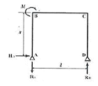
- 0
- M
- 2M
- M/L×h
(정답률: 54%)
46. 보의폭 b=400mm, 유효춤 d=600mm인 철근콘크리트 단근보를 강도 설계법으로 설계할 때 콘크리트의 전압축응력은? (단, fck=24MPa, 응력블록의 깊이는 a=100mm 이다.)
- 638 kN
- 724 kN
- 816 kN
- 960 kN
(정답률: 42%)
47. 다음 중 내진 특 등급 구조물의 허용층간변위는? (단, hsk 단는 x 층층고)
- 0.0⑤ hsx
- 0.010 hsx
- 0.015 hsx
- 0.020 hsx
(정답률: 32%)
48. 강구조에서 기초콘크리트에 매입되어 주각부의 이동을 방지하는 역할을 하는 것은?
- 턴버클
- 클립앵글
- 사이드앵글
- 앵커볼트
(정답률: 52%)
49. 다음 중 그림과 같은 조건의 슬래브에서 A-A 단면의 주근의 배근도로 가장 알맞은 것은?
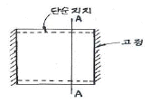
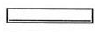
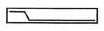
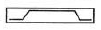
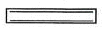
(정답률: 37%)
50. 다음의 강구조의 접합부에 대한 설명 중 옳지 않은 것은?
- 기둥의 이음에서 접합할 기둥의 단면의 춤 이상 ‧ 하에서 다를 때에는 이음판과 플랜지 사이에 4장이내의 깔판을 삽입한다.
- 기둥의 이음에서 이음판은 플랜지, 웨브 모두 양면에 설치하고 면적 분포는 기둥단면과 가능한 일치시킨다.
- 기둥과 보의 접합은 보통 핀접합으로하나, 수평력이 가새등으로 지지될 때에는 주로 강접합으로 한다.
- 기둥과 보의 접합에서 강접합의 경우에는 일반적으로 플랜지가 훰모멘트를 모두 부담하는 것으로 설계한다.
(정답률: 31%)
51. 그림과 같은 보의 C점에 대한 처짐은? ( 단, EI는 전경간에 걸쳐 일정하다.)
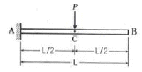
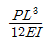
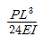
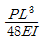
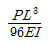
(정답률: 36%)
52. 그림과 같은 양단 고정보에서 B단의 휨모멘트 값은?
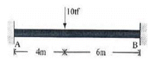
- 2.4tf ‧ m
- 9.6tf ‧ m
- 14.4tf ‧ m
- 24.8tf ‧ m
(정답률: 47%)
53. 다음의 말뚝기초에 대한 설명 중 옳지 않은 것은?
- 말뚝기초의 설계에 있어서는 하중의 편심에 대한 검토는 하지 않는다.
- 동일건축물 또는 공작물에서는 지지말뚝과 마찰말뚝을 혼용해서는 안 된다.
- 충격력, 반복력, 횡력, 인발력 등을 받는 기초에 있어서는 말뚝기초에 대한 지반의 저항력 및 말뚝에 발생하는 복합응력에 대하여 안전성을 검토하여야 한다.
- 기성콘크리트 말뚝을 타설 할 때 그 중심 간격은 말뚝머리 지름의 2.5배 이상 또한 750mm 이상으로 한다.
(정답률: 48%)
54. 다음의 각 지반의 허용 지내력의 크기가 큰 것부터 순서대로 올바르게 나열된 것은?
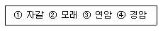
- ② ＞① ＞③ ＞④
- ① ＞② ＞③ ＞④
- ④ ＞③ ＞① ＞②
- ④ ＞③ ＞② ＞①
(정답률: 64%)
55. 강구조에 대한 설명 중 옳지 않은 것은?
- 긴스팬의 구조물이나 고층구조물에 적합하다.
- 강재는 다른 구조재료에 비하여 균질도가 높다.
- 재료가 불에 타지 않기 때문에 내화력이 크다.
- 면에 비하여 부재 길이가 비교적 길고 두께가 얇아 좌굴하기 쉽다.
(정답률: 64%)
56. 피복두께 30mm, 직경 16mm 주근이 배근된 두께 150mm 철근콘크리트 1방향 슬래브에서 전단 철근 없이 지지할 수 있는 단위길이 1m당 최대계수 전단력은? (단, fck=24MPa, 전단력에 대한 강도 감소계수 ∮=08, 콘크리트에 의한 전단강도
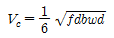
임)- 74.6 kN/m
- 78.5 kN/m
- 80.0 kN/m
- 82.6 kN/m
(정답률: 23%)
57. 직경 22mm, 길이 50cm 의 강봉에 축방향 인장력을 작용시켰더니 길이는 0.04cm 늘어났고 직경은 0.0006cm 줄었다. 이 재료의 포아송 수는?
- 0.34
- 2.93
- 0.015
- 66.67
(정답률: 60%)
58. 철근 콘크리트 구조에서 공정하중 및 활하중에 의한 전단력이 각각40 kN, 30 kN 일 때 소요 전단강도는?
- 135 kN
- 124 kN
- 116 kN
- 107 kN
(정답률: 25%)
59. 그림과 같은 구조에서 A단에 생기는 휨모멘트는? (단, ① : K=1, ② : K=2)
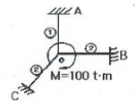
- 10t ‧ m
- 40t ‧ m
- 80t ‧ m
- 100t ‧ m
(정답률: 43%)
60. 그림과 같은 구조물의 부정정차 수는?
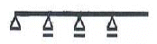
- 1차
- 2차
- 3차
- 4차
(정답률: 35%)
4과목: 건축설비
61. 다음 중 급수관의 관경 결정과 가장 관계가 적은 것은?
- 동적부하해석법
- 관균등표
- 마찰저항선도
- 동시사용률
(정답률: 38%)
62. 연속해서 운전할 수 있는 보일러의 능력으로서 난방부하, 급탕부하, 배관부하, 예열부하의 합이며 일반적으로 보일러 선정시에 기준이 되는 출력의 표시 방법은?
- 과부하출력
- 상용출력
- 정미출력
- 정격출력
(정답률: 52%)
63. 다음과 같은 조건하에서 실용적이 100m3인 어떤실의 여름철 틈새바람에 의한 취득 열량은?(오류 신고가 접수된 문제입니다. 반드시 정답과 해설을 확인하시기 바랍니다.)
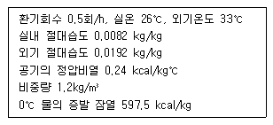
- 100.8 kcal/h
- 394.35 kcal/h
- 495.15 kcal/h
- 532.5 kcal/h
(정답률: 13%)
64. 다음의 스프링클러에 대한 설명 중 틀린 것은?
- 가압송수장치의 정격토출압력은 하나의 헤드선단에 1kg/cm2 이상 12kg/cm2 이하의 방수압력이 될 수 있는 크기일 것
- 스프링클러설비의 수원을 수조로 설치하는 경우에 는 다른 설비와 겸용하여 설치할 것
- 가압 송수장치의 송수량은 1kg/cm2 의 방수압력기준으로 80L/min 이상의 방수성능을 가진 기준 개수의 모든 헤드로부터의 방수량을 충족시킬 수 있는 양 이상의 것으로 할 것
- 개방형 스프링클러헤드를 사용하는 스프링클러 설비의 수원은 최대방수구역에 설치된 스프링클러 헤드의 개수가 30개 이하 일 경우에는 설치 헤드 수에 1.6m3를 곱한 양 이상으로 할 것
(정답률: 37%)
65. 건구온도가 25℃인 실내공기 8000m3/h와 건구온도 31℃인 외부공기2000m3/h 를 혼합하였을 때 혼합 공기의 건구온도는?
- 25.2 ℃
- 26.2 ℃
- 27.2 ℃
- 28.2 ℃
(정답률: 58%)
66. 배수관 계통에 통기관를 설치하는 가장 주된 이유는?
- 트랩의 봉수를 보호하기 위하여
- 오수의 역류를 방지하기 위하여
- 화장실의 냄새를 막기 위하여
- 옥상의 빗물이 잘 빠지게 하기 위하여
(정답률: 44%)
67. 사무실의 평균조도를300[lx]로 설계하고자 한다. 다음과 같은 조건에서의 조명률을 0.6에서 0.7로 개선 할 경우 광원의 개수는 얼마만큼 줄일 수 있는가?
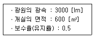
- 15 개
- 18 개
- 25 개
- 28 개
(정답률: 33%)
68. 피뢰침 설비에 관한 설명 중 옳지 않은 것은?
- 높이20m 이상의 건축물에는 피뢰침을 설치한다.
- 돌침은 건축물의 맨 윗부분으로 부터 25cm 이상 돌출시켜 설치한다.
- 접지극은 각 인하도선에 1개 이상 접속 한다.
- 일반 건물의 돌침 및 수평 도체의 보호각은 최대 45°이하 이여야 한다.
(정답률: 40%)
69. 최상부의 배수 수평관이 배수 수직관에 접속된 위치보다도 더욱 위로 배수 수직관을 끌어올려 대기중에 개구하여 통기관으로 사용되는 부분을 의미하는 것은?
- 각개통기관
- 루프통기관
- 신정통기관
- 도피통기관
(정답률: 52%)
70. 다음 중 약전 설비가 아닌 것은?
- 전등설비
- 인터폰설비
- 전화설비
- 방송설비
(정답률: 47%)
71. 다음의 증기난방에 대한 설명 중 옳은 것은?
- 온수난방에 비하여 예열시간이 길다.
- 온수난방에 비하여 한랭지에서 동결의 우려가 많다.
- 온수난방에 비하여 부하변동에 따른 실내 방열량의 제어가 용이하다.
- 방열기의 표면온도가 높아 쾌적성은 온수난방보다 좋지 않다.
(정답률: 44%)
72. 다음 중 급수용 저수조에 관한 설명으로 옳지 않은 것은?
- 5m3을 초과하는 저수조는 청소ㆍ위생 점검 및 보수등 유지관리를 위하여 1개의 저수조를 2 이상의 부분으로 구획하거나 저수조를 2개 이상 설치한다.
- 넘침관(Overflow Pipe)은 간접배수로 한다.
- 보수점검을 위하여 30cm폭의 맨홀을 설치한다.
- 청소 및 배수를 위하여 최하단부에 배수밸브를 설치한다.
(정답률: 24%)
73. 다음 중 증기트랩에 속하지 않는 것은?
- 벨로즈트랩
- 버킷트랩
- 드럼트랩
- 플로트트랩
(정답률: 50%)
74. 로프식 엘리베이터와 유압식 엘리베이터를 비교할 때 유압식 엘리베이터의 장점은?
- 전동기 출력이 작다.
- 기계실 위치가 자유롭다.
- 기계실 발열량이 작다.
- 속도의 범위가 자유롭다.
(정답률: 63%)
75. 다음의 수관 보일러에 대한 설명 중 옳지 않은 것은?
- 드럼과 드럼 간에 여러 개의 수관을 연결하고, 관내에 흐르는 물을 가열하므로 온수 및 증기를 방생시킨다.
- 사용압력이 연관식보다 높고, 부하변동에 대한 추종성이 높다.
- 대형건물 또는 병원이나 호텔 등에 사용 된다.
- 연관식보다 설치면적이 작고, 초기 투자비가 적게 든다.
(정답률: 57%)
76. 일반적으로 실내 환기량의 기준이 되는 것은?
- 공기의 온도
- NO2 농도
- CO2 농도
- O2 농도
(정답률: 60%)
77. 다음 중 옥내 배선의 굵기를 결정하는 주된 요소에 포함되지 않는 것은?
- 허용전류
- 조명방식
- 전압강하
- 기계적강도
(정답률: 62%)
78. 청소구(Clean Out)의 설치 위치로 적당하지 않는 곳은?
- 배수 수평주관 및 배수 수평지관의 기점
- 배수 수평주관과 옥외배수관의 접속장소와 가까운 곳
- 배수 수직관의 최하부
- 배수관이 30° 이상의 각도로 방향을 바꾸는 곳
(정답률: 33%)
79. 카(Car)가 최상층이나 최하층에서 정상 운행위치를 벗어나 그 이상으로 운행하는 것을 방지하는 엘리베이 터 안전장치는?
- 카운터웨이트(Counter Weight)
- 가이드레일(Guide Rail)
- 완충기(Buffer)
- 리미트스위치(Limit Switch)
(정답률: 62%)
80. 다음의 수전설비에 대한 설명 중 틀린 것은?
- 특별 고압수전 설비는 7,000V 를 넘는 전압으로 수전하는 방식이다.
- 수전용량 산출에 사용하는 부하율이란 평균 수용전력을 부하밀도로 나눈 것이다.
- 수전용량 산출에 사용하는 수용율은 최대수용전력을 부하 설비용량으로 나눈 것이다.
- 부등율이란 수용설비 각각의 최대수용 전력의 합을 합성 최대 수용전력으로 나눈 것이다.
(정답률: 42%)
5과목: 건축법규
81. 다음 중 방화구획에 관한 설명이 잘못된 것은?
- 방화구획의 개구부에는 갑종 방화문을 설치한다.
- 지하층은 바닥면적 100m2 이내마다 구획한다.
- 10층 이하의 층은 바닥면적 1000m2이내마다 구획한다.
- 11층 이상의 층은 바닥면적 200m2이내마다 구획한다.
(정답률: 46%)
82. 건축물의 높이가 60m인 건축물을 건축함에 있어 건축법에서 허용하는 최대 오차는 얼마인가?
- 0.6m
- 0.8m
- 1.0m
- 1.2m
(정답률: 26%)
83. 지하층의 비상탈출구에 관한 기준 중 비상탈출구의 유효너비와 유효높이 기준으로 옳은 것은? (단, 주택의 경우제외)
- 유효너비 0.5m 이상, 유효높이 1.75m 이상
- 유효너비 0.75m 이상, 유효높이 1.5m 이상
- 유효너비 1.5m 이상, 유효높이 1.75m 이상
- 유효너비 1.75m 이상, 유효높이 1.5m 이상
(정답률: 54%)
84. 높이가 31m를 넘는 각 층의 바닥면적 중 최대 바닥면적이 3,500m2인 종합병원에 설치하여야 할 비상용 승강기의 최소대수는?
- 1대
- 2대
- 3대
- 4대
(정답률: 43%)
85. 주차장법상 주차전용건축물의 건폐율, 용적률 기준으로 맞는 것은?
- 건폐율 : 100 분의 80 이하, 용적률 : 1,000% 이하
- 건폐율 : 100 분의 80 이하, 용적률 : 1,500% 이하
- 건폐율 : 100 분의 90 이하, 용적률 : 1,200% 이하
- 건폐율 : 100 분의 90 이하, 용적률 : 1,500% 이하
(정답률: 39%)
86. 국토의 계획 및 이용에 관한 법률상 도시기본계획에 포함되어야 하는 내용이 아닌 것은?
- 토지의 이용 및 개발에 관한 사항
- 토지의 용도별 수요 및 공급에 관한 사항
- 공원 녹지에 관한 사항
- 주차장의 설치ㆍ정비 및 관리에 관한 사항
(정답률: 42%)
87. 비상용 승강기의 승강장의 구조 기준으로 옳지 않은 것은?
- 승강장은 각 층의 내부와 연결될 수 있도록 할 것
- 벽 및 반자가 실내에 접하는 부분의 마감 재료는 난연재료로 할 것.
- 승강장의 바닥면적은 비상용 승강기 1대에 대하여 6m2이상으로 할 것
- 피난 층이 있는 승강장의 출입구로부터 도로 또는 공지에 이르는 거리가 30m 이하일 것
(정답률: 60%)
88. 중앙건축위원회에 관한 설명으로 옳은 것은?
- 위원회의 회의는 재적위원 2/3 의 출석으로 개의 하고 출석위원 과반수의 찬성으로 의결한다.
- 공무원이 아닌 위원의 임기는 2년으로 하되 연임 할 수 있다.
- 위원회의 위원장은 위원중에서 국무총리가 임명 또는 위촉한다.
- 위원회의 위원은 관계 공무원과 건축에 관한 학식 또는 경험이 풍부한 사람 중 건설교통부 차관이 임명 또는 위촉하는 자가 된다.
(정답률: 30%)
89. 건축 허가신청에 필요한 설계도서에 속하지 않는 것은?
- 건축계획서
- 투시도
- 배치도
- 실내마감도
(정답률: 46%)
90. 다음 중 주차장법상 자주식 주차장의 형태에 속하지 않는 것은?
- 지하식
- 지평식
- 건축물식
- 기계식
(정답률: 47%)
91. 건축물의 사용승인에 대한 설명 중 옳지 않은 것은?
- 건축주는 허가를 받았거나 신고를 한 건축물의 건축공사를 완료한 후 그 건축물을 사용하고자 하는 경우에 허가권자에게 사용승인을 신청하여야 한다.
- 특별시장ㆍ광역시장이 사용 승인을 한 때에는 3일 이내에 시장, 군수, 구청장에게 통지하여 건축을 대장에 기재하게 하여야 한다.
- 건축주는 사용승인을 신청할 때 공사감리자가 작성한 감리완료보고서(공사감리자가 지정된 경우) 및 건설교통부령이 정하는 공사 완료 도서를 첨부한다.
- 허가권자는 사용승인 신청서를 받은 날 부터 7일 이내에 사용승인을 위한 검사를 하여야 한다.
(정답률: 50%)
92. 국토의 계획 및 이용에 관한 법률에 구분된 용도지구에 속하지 않는 것은?
- 주차장 정비지구
- 개발진흥지구
- 보존지구
- 방재지구
(정답률: 50%)
93. 주차장의 주차 구획에 대한 내용 중 틀린 것은?
- 평행주차형식인 경우 주차단위 구획은 주차대수 1대에 대하여 너비 2m이상, 길이 6m이상으로 한다.
- 경형자동차 전용 주차구획의 주차단위 구획은 백색실선으로 표시하여야 한다.
- 평행주차형식이 아닌 경우 지체장애인의 전용주차장의 주차단위구획은 주차대수 1대에 대하여 너비 3.3m이상 길이 5m 이상으로 한다.
- 평행주차형식이 아닌 경우 주차단위 구획은 주차대수 1대에 대하여 너비2.3m 이상, 길이 5m 이상으로 한다.
(정답률: 32%)
94. 다음 중 시가화조정구역안에서 허가를 거부할 수없는 행위에 속하지 않는 것은?
- 1가구당 기존 축사를 포함하여 300m2 이하의 축사의 설치
- 시가화조정구역안의 토지 또는 그 토지와 일체가 되는 토지에서 생산되는 생산물의 저장에 필요한 것으로서 기존 창고면적을 포함하여 그 토지면적의 0.5%이하의 창고의 설치
- 1가구당 기존 퇴비사의 면적을 포함하여 100m2 이하의 퇴비사의 설치
- 과수원에서 기존관리용 건축물의 면적을 포함하여 66m2 이하의 관리용 건축물의 설치
(정답률: 49%)
95. 상업지역 및 주거지역에서 규정에 의한 도로(막다른 도로로서 그 길이가 10m미만인 경우를 제외한다.) 에 접한 대지의 건축물에 설치하는 냉방시설 및 환기시설의 배기구는 도로면으로부터 최소 얼마이상의 높이에 설치해야 하는가?
- 1.8m
- 2m
- 3m
- 4.5m
(정답률: 51%)
96. 국토의 계획 및 이용에 관한 법률상 제2종전용 주거지역에서 건축할 수 있는 건축물에 속하지 않는 것은?
- 단독주택
- 종교시설 (당해용도에 쓰이는 바닥면적의 합계가 2000m2 미만인 것)
- 공동주택
- 제1종 근린생활시설 (당해용도에 쓰이는 바닥면적의 합계가 1000m2 미만인 것)
(정답률: 24%)
97. 도시계획시설 또는 도시계획 시설 예정지에 건축을 허가할 수 있는 가설 건축물의 구조가 아닌 것은?
- 철골철근콘크리트구조
- 벽돌구조
- 철골구조
- 블록구조
(정답률: 48%)
98. 다음 중 일반주거지역 안에서 일반 업무시설을 건축할 경우 일조 등의 확보를 위한 건축물의 높이 제한 사항에 맞지 않는 것은?(과련규정 개정 전 문제로 기존 정답은 1번이었습니다. 여기서는 1번을 누르면 정답 처리됩니다. 자세한 내용은 해설을 참고 하세요)
- 너비 15m 이상의 도로에 접했을 경우는 제한을 받지 않는다.
- 높이 8m를 초과하는 부분은 정북방향으로의 인접 대지경계선으로부터 당해 건축물의 각 부분의 높이의 2분의1이상 띄어야 한다.
- 높이 8m 이하인 부분은 정북방향으로의 인접대지 경계선으로부터 2m 이상 띄어야한다.
- 높이 4m 이하인 부분은 정북방향으로의 인접대지 경계선으로부터 1m 이상 띄어야한다.
(정답률: 60%)
99. 건축분야의 건축사보 1인 이상을 전체공사 기간동안, 토목ㆍ전기 또는 기계분야의 건축사보 1인 이상을 각 분야별 해당공사 기간동안 각각 공사현장에서 감리업무를 수행하게 하여야하는 대상건축공사의 기준에 속하지 않는 것은?
- 바닥면적의 합계가 5000m2 이상인 건축공사
- 건축물의 층수가 10 층 이상인 건축공사
- 연속된 5개층 이상으로서 바닥면적의 합계가 3000m2 이상인 건축공사
- 아파트의 건축공사
(정답률: 29%)
100. 다음 중 용도별 건축물의 종류가 잘못 연결된 것은?(오류 신고가 접수된 문제입니다. 반드시 정답과 해설을 확인하시기 바랍니다.)
- 공관 - 단독주택
- 기숙사 - 공동주택
- 바닥면적이 500m2인 보건소 - 제1종 근린생활시설
- 바닥면적이 300m2인 교회 - 제2종 근린생활시설
(정답률: 39%)